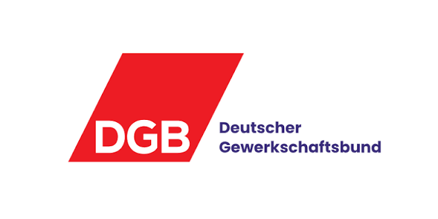
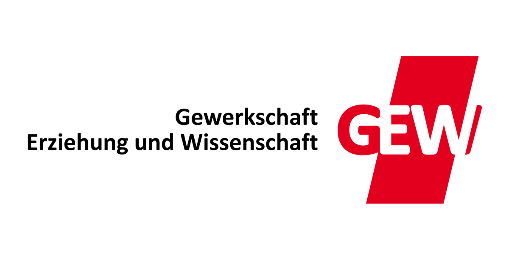
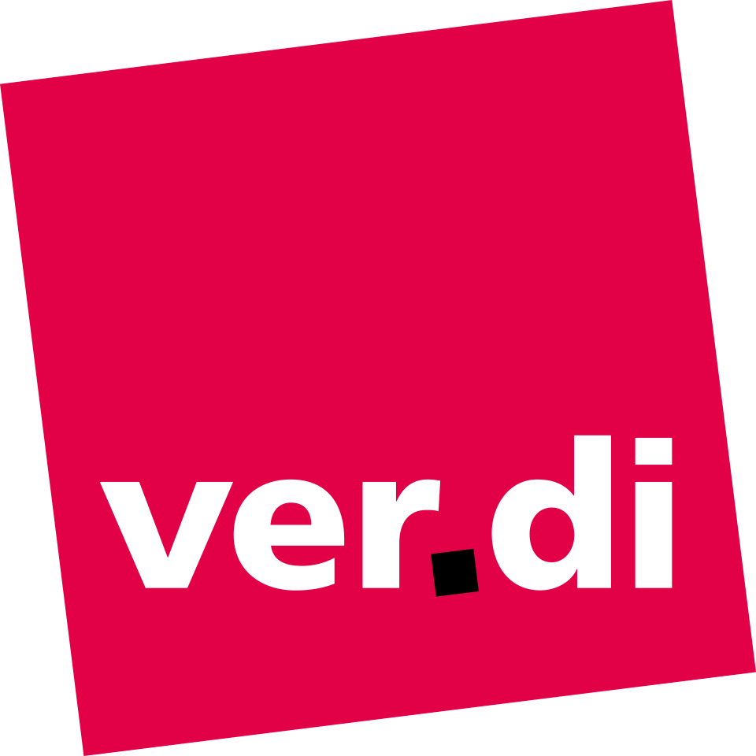

Kommunen stärken - große Vermögen gerecht besteuern!
Aufruf - Bürgermeister:innen aus ganz Deutschland fordern:
Die Kommunen sind zentrale Träger der öffentlichen Daseinsvorsorge und das Fundament unserer Demokratie. Doch die finanzielle Lage spitzt sich vielerorts zu. Schulen, Kitas und Straßen sind sanierungsbedürftig, öffentliche Einrichtungen, wie Schwimmbäder oder Krankenhäuser, schließen, Modernisierung und Ausbau des öffentlichen Nahverkehrs schreiten zu langsam voran und es fehlt an Personal in der Verwaltung. Gleichzeitig wachsen die kommunalen Herausforderungen: Energiewende, Digitalisierung und demografischer Wandel lassen sich ohne handlungsfähige Kommunen nicht bewältigen.
Wir ringen vor Ort um die Finanzierung von Bildung, sozialer Infrastruktur und Klimaschutz, aber es fehlen die dringend benötigten Einnahmen. Eine gerechte Besteuerung sehr großer Vermögen würde hier einen wichtigen Ausgleich schaffen und die Kommunen in die Lage versetzen, ihre Aufgaben angemessen zu erfüllen. Zugleich würde es das Vertrauen in die Demokratie stärken.
Deshalb fordern wir Bürgermeisterinnen und Bürgermeister die Bundesregierung auf, über eine faire Besteuerung großer Vermögen notwendige finanzielle Spielräume zu eröffnen. Die Einnahmen müssen zur Stärkung der kommunalen Finanzen eingesetzt werden, um damit die Handlungsfähigkeit unserer Städte und Gemeinden zu sichern.
Unterstützende Organisationen



